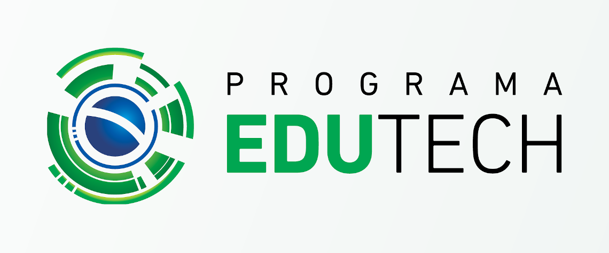

Parabéns,
Sua inscrição foi realizada com sucesso! Fique atento as datas de inicio do curso EDUTECH- Curso de Programação

Pautada nas “Diretrizes para Ensino de Computação na Educação Básica”, da Sociedade Brasileira de Computação, e considerando as Competências Gerais da BNCC para a formação do jovem do século XXI, a Secretaria de Estado da Educação e do Esporte, visando a compreensão plena do mundo, cada vez mais conectado e imerso em tecnologias digitais, oportuniza a aprendizagem da programação a crianças, adolescentes e jovens matriculados nas instituições de ensino da Rede Pública Estadual do Paraná, aumentando a capacidade de aprendizagem e resolução de problemas, promovendo novas formas de expressão e pensamento com a utilização de linguagem digital, exercitando a curiosidade intelectual, o pensamento crítico, científico e a criatividade e dando apoio ao aprendizado das demais disciplinas.
Quer voltar para pagína inicial? Clique aqui